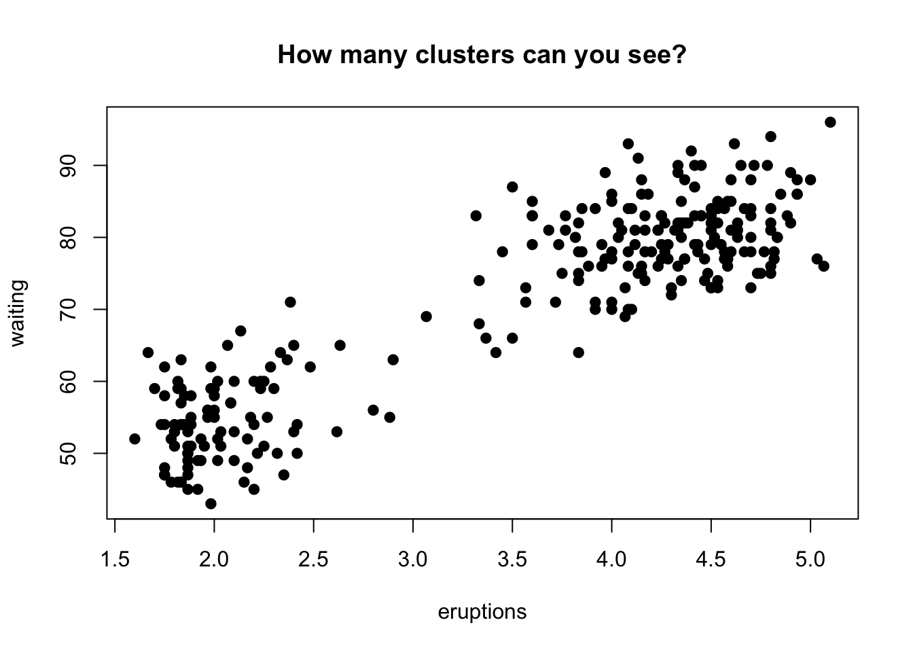
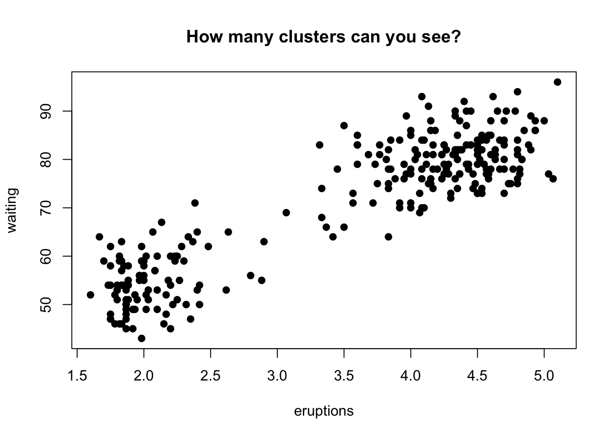
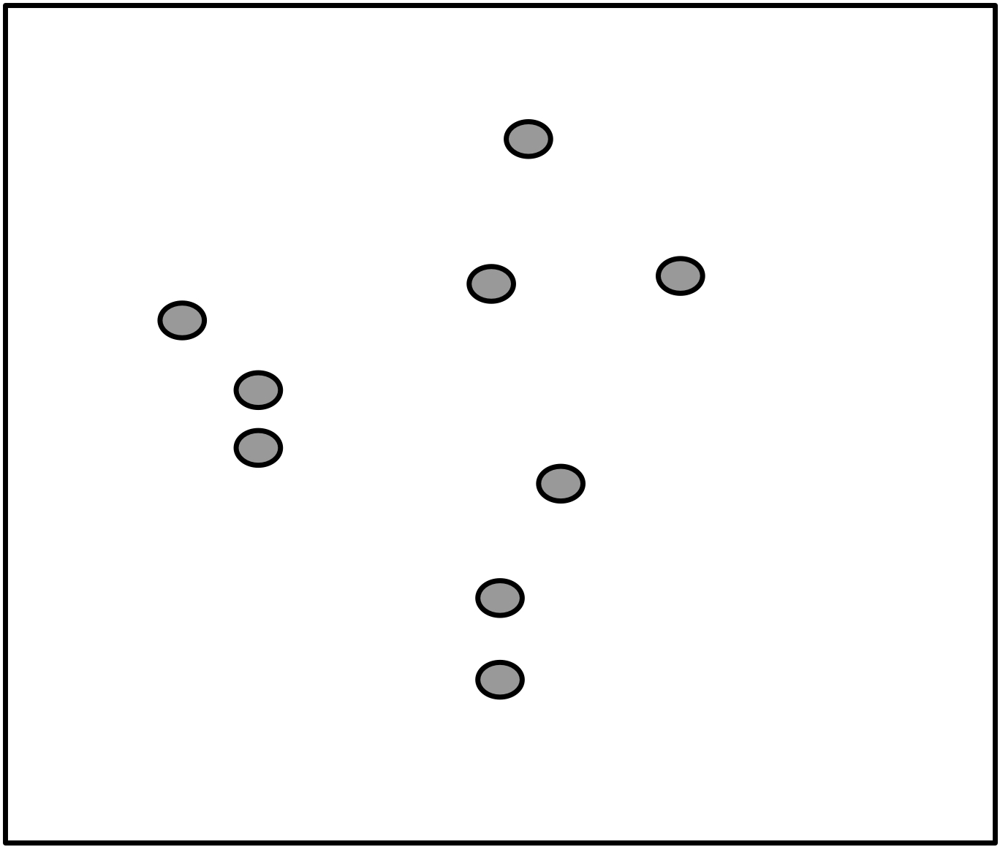
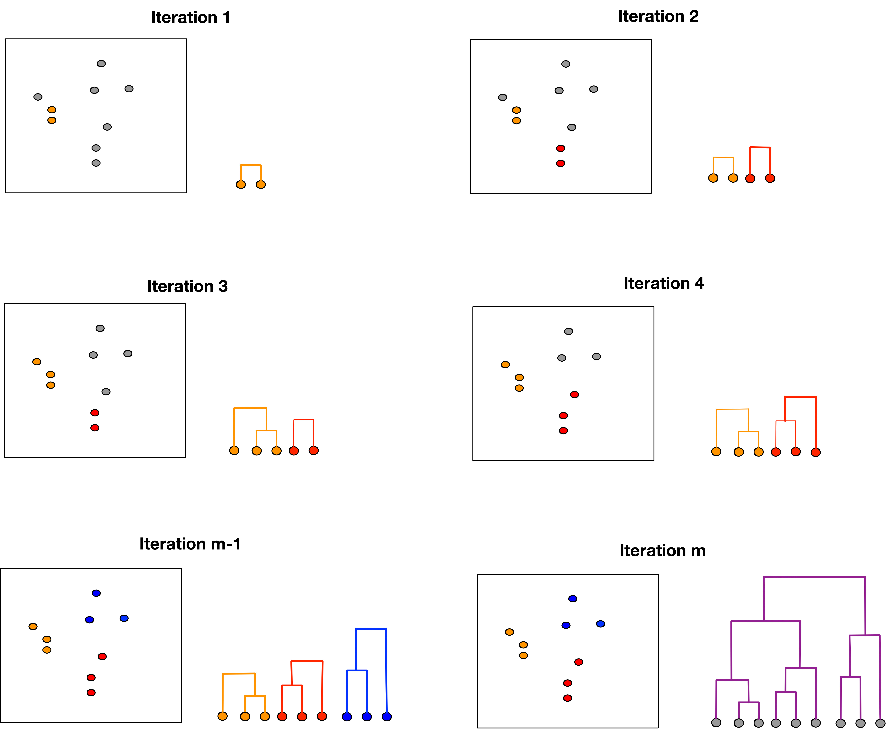
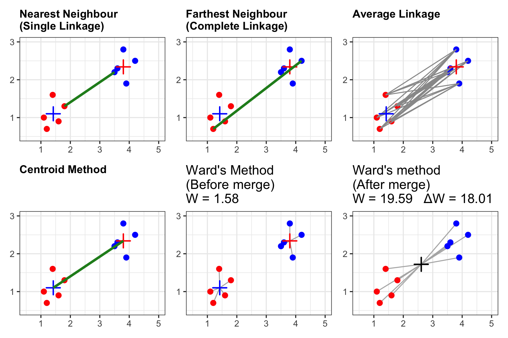
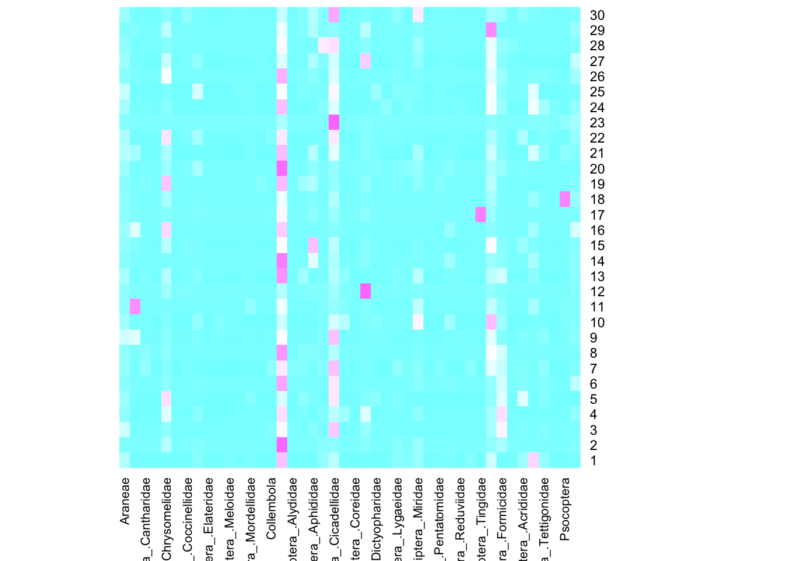
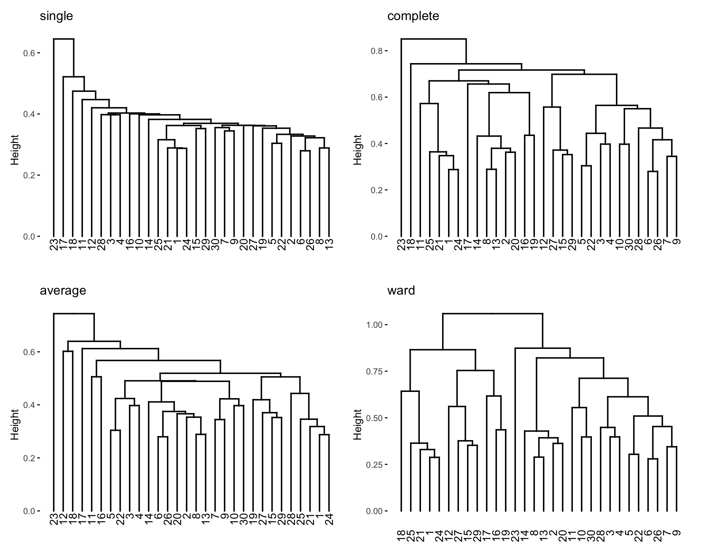
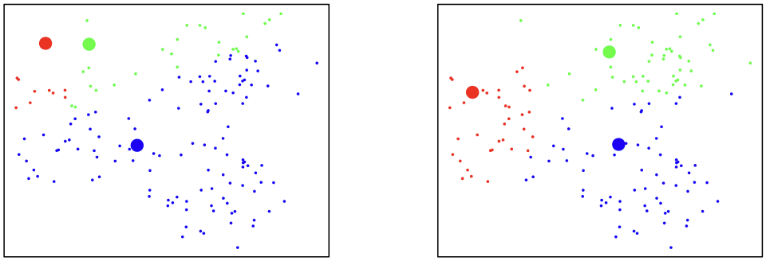
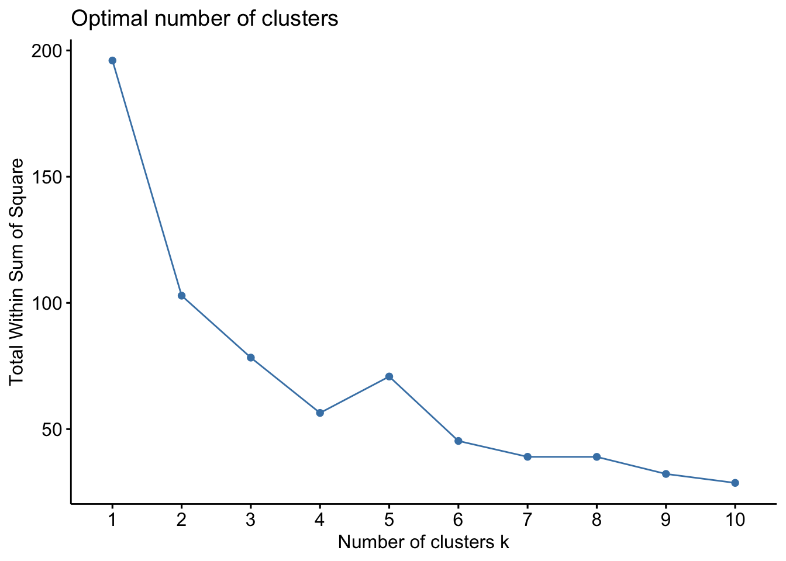
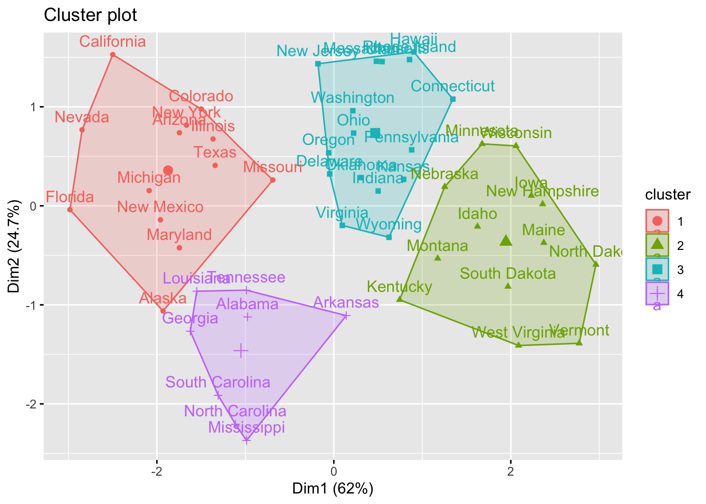

Code
data(faithful)
plot(faithful,
main = "How many clusters can you see?",
pch = 19)
By the end of this lecture, you should be able to:
Goal: Discover reasonable groupings (“clusters”) of subjects or units.
Examples:
Cluster analysis is an unsupervised learning method:
data(faithful)
plot(faithful,
main = "How many clusters can you see?",
pch = 19)
A crucial factor for generating useful clusters is the initial selection of variables.
Most clustering methods share two core ideas:


To determine the number of clusters, cut the dendrogram at a certain height and count the resulting branches.
Linkage determines the dissimilarity d(C_1, C_2) between two clusters, C_1 and C_2. The key R function for hierarchical clustering is hclust in the stats package.
| Linkage Method | Formula | Description |
|---|---|---|
| Single Linkage (Nearest-Neighbor) | d(C_{1},C_{2})=\min_{i\in C_{1},j\in C_{2}}d_{ij} | Distance between closest points in the clusters. |
| Complete Linkage (Furthest-Neighbor) | d(C_{1},C_{2})=\max_{i\in C_{1},j\in C_{2}}d_{ij} | Distance between farthest points in the clusters. |
| Average Linkage | d(C_{1},C_{2})=\frac{1}{|C_{1}|\cdot|C_{2}|}\sum_{i\in C_{1},j\in C_{2}}d_{ij} | Average of all pairwise distances. |
| Centroid Method | d(\overline{\mathbf{x}}_{A},\overline{\mathbf{x}}_{B})=\bigl\|\overline{\mathbf{x}}_{A}-\overline{\mathbf{x}}_{B}\bigr\|^2_2 | Distance between centroids (means) of two clusters. |
| Ward’s Method | \Delta_{SST} = \frac{n_{A}n_{B}}{n_{A}+n_{B}}\bigl\|\overline{\mathbf{x}}_{A}-\overline{\mathbf{x}}_{B}\bigr\|^2_2 | Merges two clusters that result in the smallest increase in the total within-cluster sum of squared Euclidean distances (SST). |

The data set (newpbi.csv) consist of insect counts collected on 30 Iowa prairies with 44 types of insects. Counts of these insects were taken periodically over one summer at the 30 sites. The first column (Site) identifies the sample location, and the second column (Type) is likely a categorical environmental or habitat variable. The remaining columns are abundance counts for different arthropod groups (e.g., Araneae, ACari).
df = read.csv("newpbi.csv")
head(df)Type)?abundance_matrix = as.matrix(df[,-c(1:2)])
heatmap(abundance_matrix, col=cm.colors(256),
Rowv=NA, Colv=NA) 
heatmap(x, Rowv = NULL, Colv = if(symm)"Rowv" else NULL,
distfun = dist, hclustfun = hclust,
reorderfun = function(d, w) reorder(d, w),
add.expr, symm = FALSE, revC = identical(Colv, "Rowv"),
scale = c("row", "column", "none"), na.rm = TRUE,
margins = c(5, 5), ColSideColors, RowSideColors,
cexRow = 0.2 + 1/log10(nr), cexCol = 0.2 + 1/log10(nc),
labRow = NULL, labCol = NULL, main = NULL,
xlab = NULL, ylab = NULL,
keep.dendro = FALSE, verbose = getOption("verbose"), ...)heatmap performs clustering for both rows and columns based on the clustering function hclust. Unless we know the default clustering uses an appropriate distance/dissimilarity metric, we can use the clustered heatmap for interpretation.vegdistlibrary(vegan)
D = vegdist(abundance_matrix, method = "bray")hclusthca1 = hclust(D, method="single")
hca2 = hclust(D, method="complete")
hca3 = hclust(D, method="average")
hca4 = hclust(D, method="ward.D2")library(factoextra)
p1=fviz_dend(hca1)
p2=fviz_dend(hca2)
p3=fviz_dend(hca3)
p4=fviz_dend(hca4)
patchwork::wrap_plots(p1 + ggtitle("single"),
p2 + ggtitle("complete"),
p3 + ggtitle("average"),
p4 + ggtitle("ward"),ncol=2)
K-means clustering is a type non-hierarchical clustering algorithm
No tree structure exists
One often needs to pre-determine the number of clusters in the algorithm to find the clusters


This small data set has only four cases (A, B, C, and D) and two variables are measured on each case. The data vectors are: A=\begin{pmatrix}5\\ 3\end{pmatrix} \quad B=\begin{pmatrix}-1\\ 1\end{pmatrix} \quad C=\begin{pmatrix}1\\ -2\end{pmatrix} \quad D=\begin{pmatrix}-3\\ -2\end{pmatrix}
Start with initial clusters \mathbf{(A, B)} and \mathbf{(C, D)}. The centroids for the initial clusters are C_{1}=\begin{pmatrix}2\\ 2\end{pmatrix} \quad \text{and} \quad C_{2}=\begin{pmatrix}-1\\ -2\end{pmatrix}
In each iteration, we need to compute the distance of each case from each centroid. Here we use Euclidean distance. Then we update cluster centroids.
Case A: d(A,C_{1})=\sqrt{(5-2)^{2}+(3-2)^{2}}=\sqrt{10}, and d(A,C_{2})=\sqrt{(5-(-1))^{2}+(3-(-2))^{2}}=\sqrt{61}
Case B: d(B,C_{1})=\sqrt{(-1-2)^{2}+(1-2)^{2}}=\sqrt{10}, and d(B,C_{2})=\sqrt{(-1-(-1))^{2}+(1-(-2))^{2}}=\sqrt{9}
Case C: d(C,C_{1})=\sqrt{(1-2)^{2}+(-2-2)^{2}}=\sqrt{17}, and d(C,C_{2})=\sqrt{(1-(-1))^{2}+(-2-(-2))^{2}}=\sqrt{4}
Case D: d(D,C_{1})=\sqrt{(-3-2)^{2}+(-2-2)^{2}}=\sqrt{41}, and d(D,C_{2})=\sqrt{(-3-(-1))^{2}+(-2-(-2))^{2}}=\sqrt{4}
Case A: d(A,C_{1})=\sqrt{(5-5)^{2}+(3-3)^{2}}=\sqrt{0} and d(A,C_{2})=\sqrt{(5-(-1))^{2}+(3-(-1))^{2}}=\sqrt{52}
Case B: d(B,C_{1})=\sqrt{(-1-5)^{2}+(1-3)^{2}}=\sqrt{40} and d(B,C_{2})=\sqrt{(-1-(-1))^{2}+(1-(-1))^{2}}=\sqrt{4}
Case C: d(C,C_{1})=\sqrt{(1-5)^{2}+(-2-3)^{2}}=\sqrt{41} and d(C,C_{2})=\sqrt{(1-(-1))^{2}+(-2-(-1))^{2}}=\sqrt{5}
Case D: d(D,C_{1})=\sqrt{(-3-5)^{2}+(-2-3)^{2}}=\sqrt{89} and d(D,C_{2})=\sqrt{(-3-(-1))^{2}+(-2-(-1))^{2}}=\sqrt{5}
The new clusters are \mathbf{(A)} and \mathbf{(B, C, D)} and the clusters did not change: C\_{1}=\begin{pmatrix}5\\ 3\end{pmatrix} \quad \text{and} \quad C\_{2}=\begin{pmatrix}-1\\ -1\end{pmatrix}
We define the components used in cluster validation metrics:
{G}: The number of groups or clusters. The goal of these methods is to find the optimal {G}.
\mathbf{w}_k: The sum of squared distances for all points within a single cluster, C_k. \mathbf{w}_k:= \sum_{i \text{ in } C_k} (\mathbf{x}_i-\bar{\mathbf{x}}_k)^{\prime} (\mathbf{x}_i-\bar{\mathbf{x}}_k)
\mathbf{W}_G: The total sum of squared distances across all \mathbf{G} clusters. This is the Within-Group Sum of Squares (WCSS): \mathbf{W}_G = \sum_{k=1}^{G} \mathbf{w_k}
\mathbf{B}_G: The Between-Group Sum of Squares (BCSS), which measures the separation of the group centroids. It is defined based on the Total Sum of Squares ({SS}_T): \mathbf{B}_G = {SS}_T - \mathbf{W}_G
| Method | Core Concept | Optimal {G} Rule | Mathematical Metric |
|---|---|---|---|
| Elbow (WCSS) | Measures total compactness (\mathbf{W}_G) as {G} increases. | Choose the {G} where the decrease in \mathbf{W}_G starts to slow significantly (the “bend”). | Plot \mathbf{W}_G vs. {G} |
| Calinski-Harabasz Index | Maximizes the ratio of separation (\mathbf{B}_G) to compactness (\mathbf{W}_G). | Choose the {G} that maximizes the CH index (highest peak). | \text{CH}(G) = \frac{\mathbf{B}_G}{\mathbf{W}_G} \cdot \frac{n-G}{G-1} |
| Gap Statistic | Compares the observed compactness (\mathbf{W}_G) to the expected compactness (\mathbf{W}_{G}^*) under a random null distribution. | Choose the smallest {G} that maximizes the Gap statistic. | \text{Gap}(G) = E_{n} \{\log(\mathbf{W}_{G}^*)\} - \log({\mathbf{W}_G}) |
Note: \mathbf{W}_G^* is defined slightly different from \mathbf{W}_G.
USArests datalibrary(factoextra)
library(cluster)
#load data
df <- USArrests
#remove rows with missing values
df <- na.omit(df)
df <- scale(df)
head(df) Murder Assault UrbanPop Rape
Alabama 1.24256408 0.7828393 -0.5209066 -0.003416473
Alaska 0.50786248 1.1068225 -1.2117642 2.484202941
Arizona 0.07163341 1.4788032 0.9989801 1.042878388
Arkansas 0.23234938 0.2308680 -1.0735927 -0.184916602
California 0.27826823 1.2628144 1.7589234 2.067820292
Colorado 0.02571456 0.3988593 0.8608085 1.864967207fviz_nbclust(df, kmeans, method = "wss")
fviz_nbclust(df, kmeans, method = "gap_stat")
set.seed(4750)
#perform k-means clustering with k = 4 clusters
km = kmeans(df,
centers = 4,
nstart = 25 # choose 25 initial centers
)
print(km)K-means clustering with 4 clusters of sizes 13, 13, 16, 8
Cluster means:
Murder Assault UrbanPop Rape
1 0.6950701 1.0394414 0.7226370 1.27693964
2 -0.9615407 -1.1066010 -0.9301069 -0.96676331
3 -0.4894375 -0.3826001 0.5758298 -0.26165379
4 1.4118898 0.8743346 -0.8145211 0.01927104
Clustering vector:
Alabama Alaska Arizona Arkansas California
4 1 1 4 1
Colorado Connecticut Delaware Florida Georgia
1 3 3 1 4
Hawaii Idaho Illinois Indiana Iowa
3 2 1 3 2
Kansas Kentucky Louisiana Maine Maryland
3 2 4 2 1
Massachusetts Michigan Minnesota Mississippi Missouri
3 1 2 4 1
Montana Nebraska Nevada New Hampshire New Jersey
2 2 1 2 3
New Mexico New York North Carolina North Dakota Ohio
1 1 4 2 3
Oklahoma Oregon Pennsylvania Rhode Island South Carolina
3 3 3 3 4
South Dakota Tennessee Texas Utah Vermont
2 4 1 3 2
Virginia Washington West Virginia Wisconsin Wyoming
3 3 2 2 3
Within cluster sum of squares by cluster:
[1] 19.922437 11.952463 16.212213 8.316061
(between_SS / total_SS = 71.2 %)
Available components:
[1] "cluster" "centers" "totss" "withinss" "tot.withinss"
[6] "betweenss" "size" "iter" "ifault" fviz_cluster(km, data = df)
aggregate(USArrests, by=list(cluster=km$cluster), mean)#add cluster assigment to original data
final_data = cbind(USArrests, cluster = km$cluster)
#view final data
head(final_data)